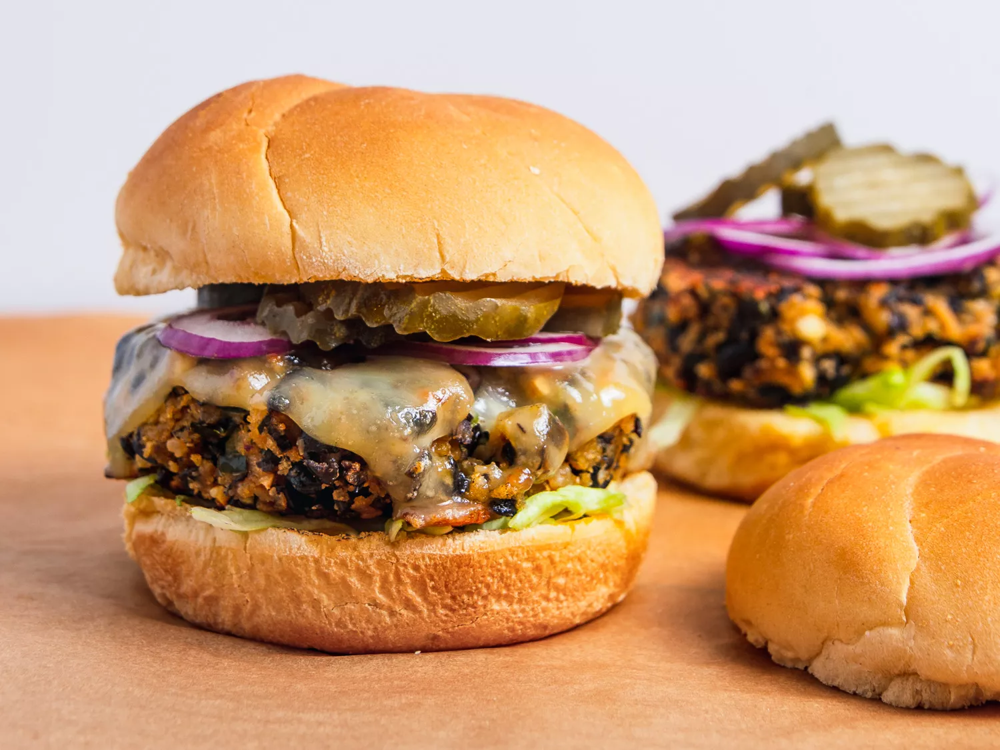

Black Bean Burgers

Description
Flavourful black bean and chile patties with melted american cheese.
Toped with pickles and a seasame seed bun. This burger pairs well
with grilled mushrooms or coleslaw.
Ingredients
- 2 (15-ounce) cans black beans, rinsed and drained
- tablespoons vegetable oil, divided
- 1 medium onion, finely chopped (about 1 cup)
- 1 large poblano pepper, finely chopped (about 1 cup)
- 3 medium cloves garlic, minced
- 1 chipotle chile in adobo sauce, finely chopped, plus 1 teaspoon sauce
- 3/4 cup roasted cashews
- 1/2 cup finely crumbled feta or cotija cheese
- 3/4 cup panko bread crumbs
- 1 large egg
- Kosher salt and freshly ground black pepper
- Cheese for topping, such as pepper jack, cheddar, muenster, or Swiss (optional)
- Toppings and buns as desired, such as shredded lettuce, sliced onions, and pickles
Steps
- Adjust oven rack to center position and preheat oven to 350°F (175°C).
Spread black beans in a single layer on a foil-lined rimmed baking sheet.
Roast until beans are mostly split open and outer skins are beginning
to get crunchy, about 20 minutes. Remove from oven and allow to cool slightly.
- While beans roast, heat 2 tablespoons oil in a medium skillet over medium-high heat until shimmering. Add onion and poblano and cook, stirring frequently, until softened, about 5 minutes. Add garlic and cook, stirring constantly, until fragrant, about 2 minutes. Add chipotle chile and sauce and cook, stirring, until fragrant, about 30 seconds. Transfer mixture to a large bowl.
- Place cashews in the bowl of a food processor and pulse until chopped into pieces no larger than 1/3-inch, about 12 short pulses. Add to bowl with onions and peppers.
- When beans are slightly cooled, transfer to food processor. Add cheese. Pulse until beans are roughly chopped (the largest pieces should be about 1/3 of a full bean in size). Transfer to bowl with onion/pepper mixture. Add bread crumbs, egg, and mayonnaise and season with salt and pepper. Fold together gently but thoroughly with hands. Patty mixture can be stored in an airtight container in the refrigerator for up to three days at this stage.
- To cook indoors: Form bean mixture into 6 to 8 patties as wide as your burger buns. Heat 1 tablespoon oil in a large nonstick or cast iron skillet over medium heat until shimmering. Add 4 patties and cook, swirling pan occasionally, until well browned and crisp on first side, about 5 minutes. Carefully flip and cook until second side is browned, about 5 minutes longer, adding cheese if desired. If cooking more than 4 burgers, cook in batches, keeping cooked burgers on a rack set in a rimmed baking sheet in a 200°F oven while second batch cooks.
- Spread top and bottom buns with chipotle mayonnaise or other condiments as desired. Add toppings to top or bottom bun as desired. Place patties on bottom buns, close burgers, and serve immediately